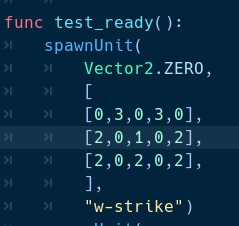
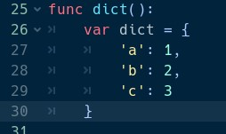

Массивы, описываться на GDScript двумя квадратными скобками. Массивы могут включать в себя, разные типы данных. Отсчёт индексов, ведётся с нуля т.е. первый элемент имеет индекс 0
Массивы, как и все переменные в GDScript являются ссылками.

Для обращения к элементам массива, нужно указать индекс элемента в квадратных скобках, сразу после названия переменной
Массивы имеют следующие методы:
size() вернёт длину массива. Длина массива – это кол-во элементов в нём
append() добавит элементы в конец массива
Многие другие
Словари, описываться на GDScript двумя фигурными скобками Словари могут включать в себя, разные типы данных. Индексами в словарях могут быть любые символы. В качестве индексов могут использовать переменные. Тогда индекс, станет равным значению переменной
Массивы, как и все переменные в GDScript являются ссылками.

Для обращения к элементам словари, нужно указать ключ элемента в квадратных скобках, сразу после названия переменной. Также можно обращаться к элементу, через точку
Словари имеют следующие методы:
has() вернёт true, если словарь содержит ключ, который был передан в параметры
values() вернёт все значения в виде массива
keys() вернёт все значения в виде массива
Многие другие